Italy


Places I Visited
Rome
Florence
Venice
Pisa
Assisi
Capri
Pompeii
Sorrento
Tuscany
Perugia
Siena
Naples
Magisano
Calabria
 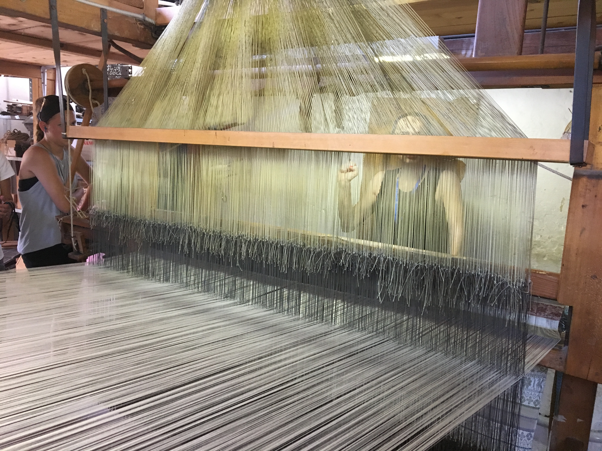
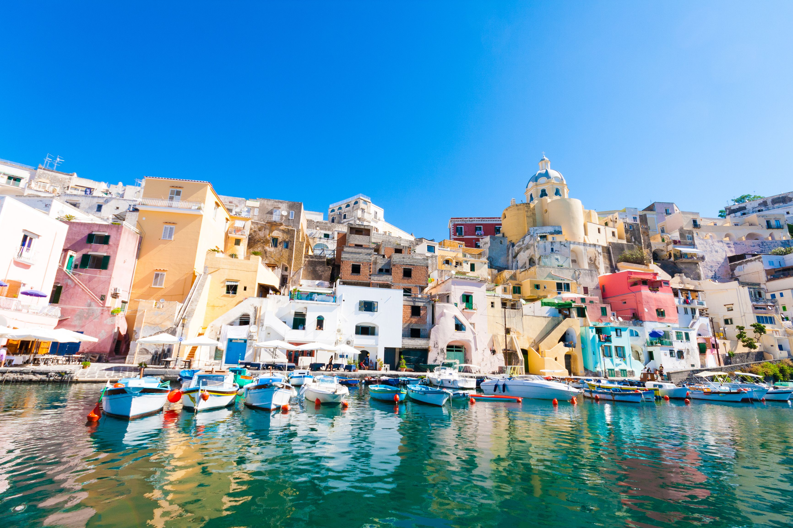
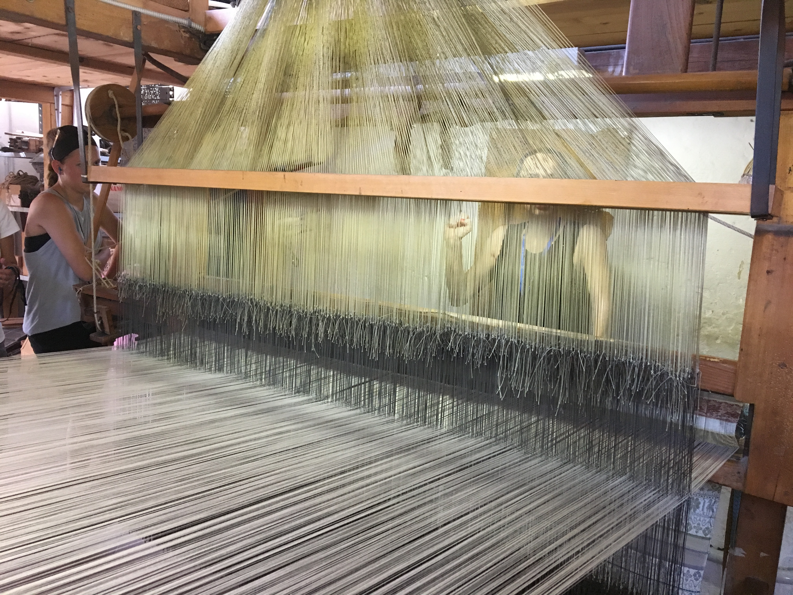
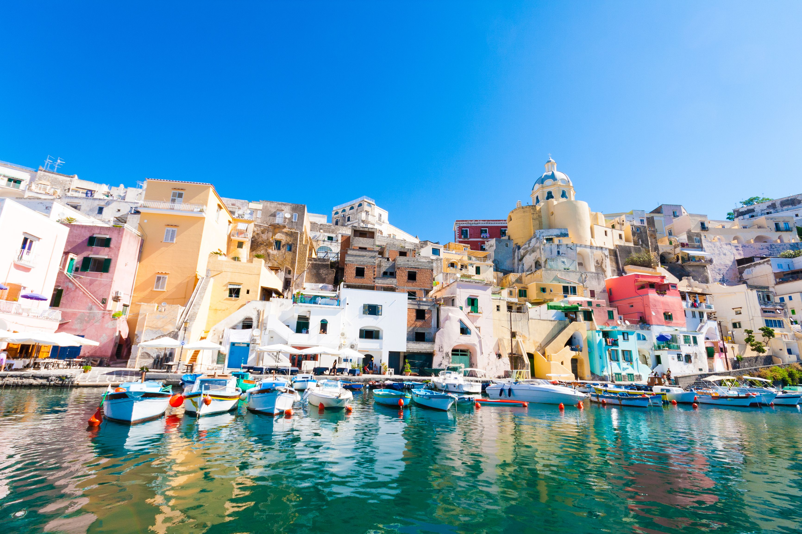
Food I Ate
Pizza
Cappuccino
Pasta
Gelato
Beef Carpaccio
Spritz
Brioche con Gelato
Cured Meats
Cheese
Wine
Cream Puff
Sandwiches
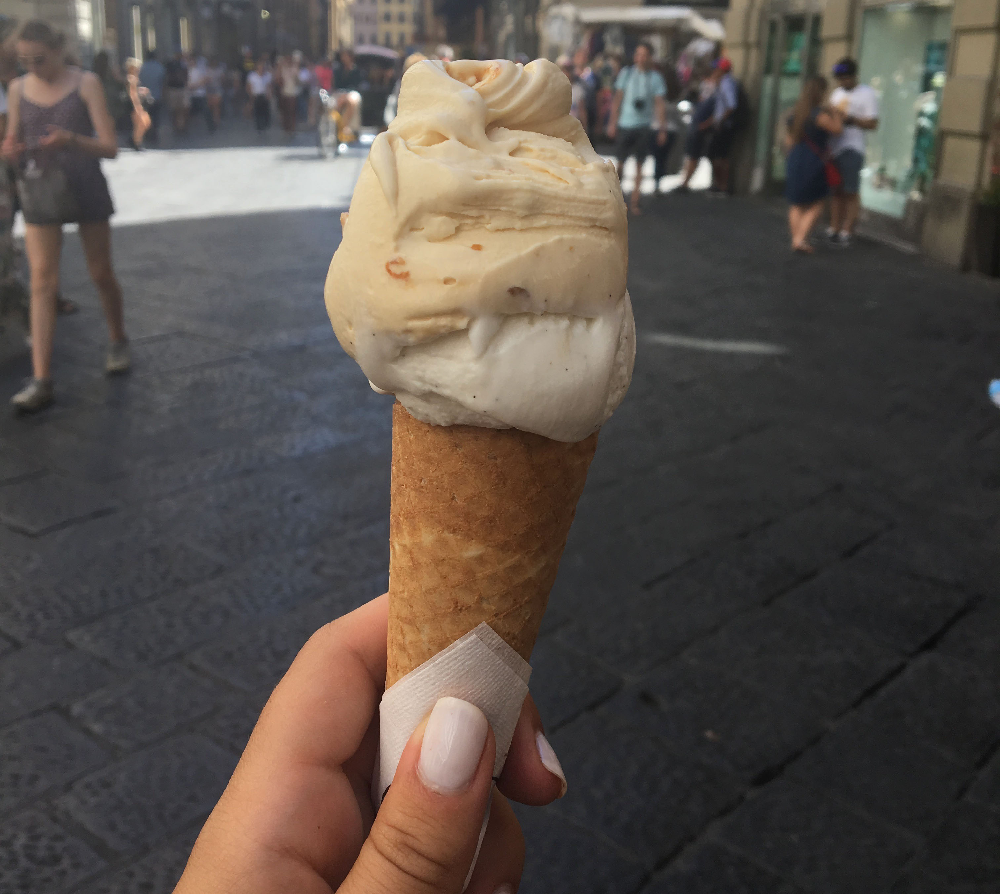 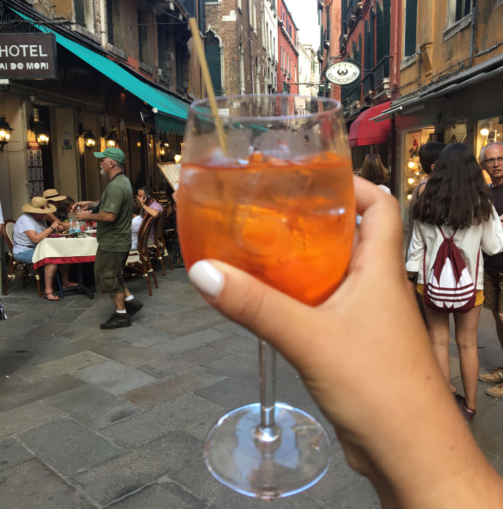 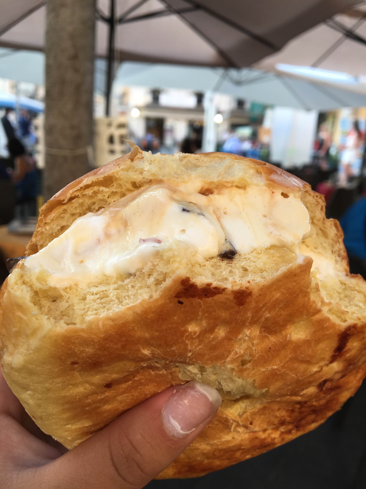 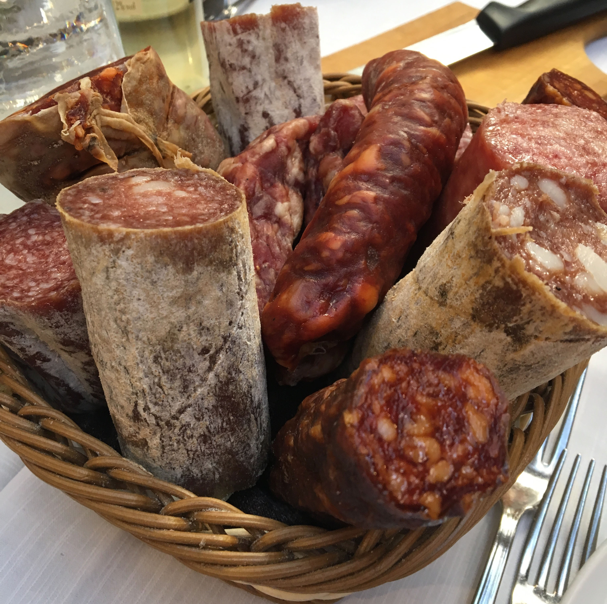 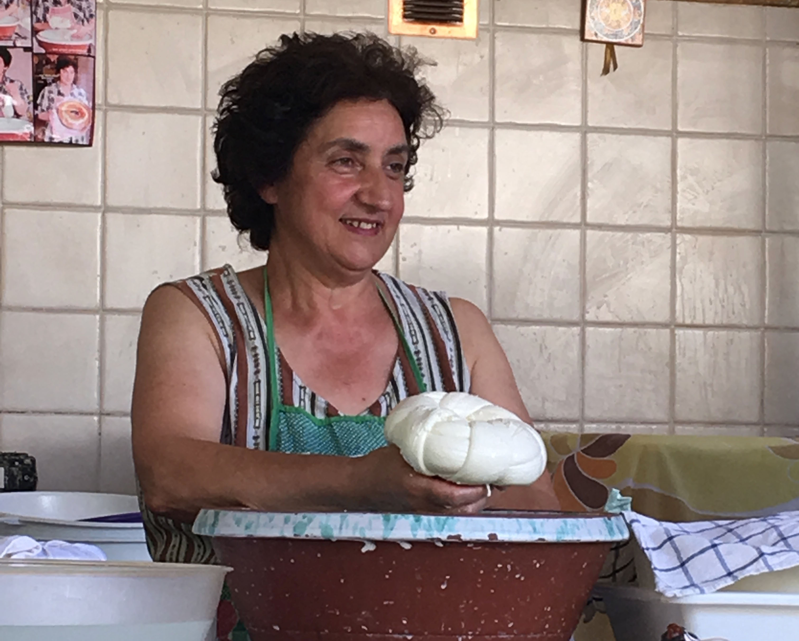 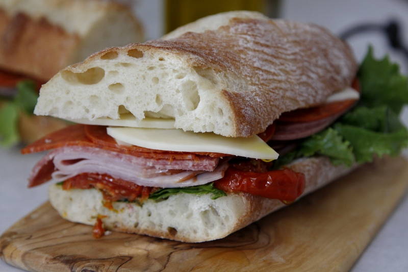
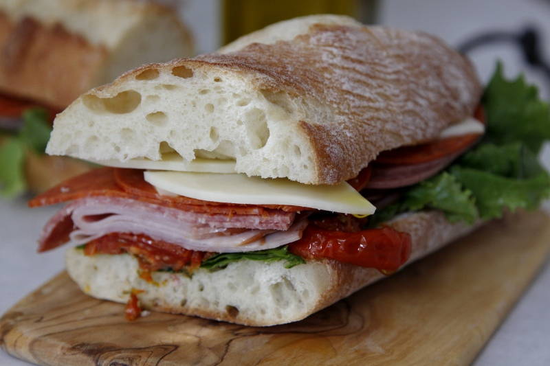
My Favorite Memories
Ice Bar
Marcella and I decided to go on to Italy after graduation on our own, instead of with our schools Euro trip since it would be a bunch of people that we weren't necessarily friends with. The Euro trip happened to be in Rome a few days before we were there, so we were able to see all the places that they went to as inspiration for what we wanted to do ourselves. On our first or second night in Rome, we were going on a dinner with our whole tour group, but Marcella and I saw that people from school went to the ice bar and we were dead set on going ourselves. So, after dinner ended, but awkwardly separated from the pack, venturing into rome on our own. Our tour guide had never heard of the ice bar, but gave us directions on which way to get there, and we took screen shots of how we shoudl go since we had limited data. Roaming the streets, in the dark, proved to be more difficult than we expected. The directions had us walking through tunnels with cars rushing by, and thorugh dark alley ways, but somehow we eventually ended up at the door of the bar. Never being to a bar before, we were nervous when we first got there, but they gave us our coats and mittens and we went inside. The whole bar is actually made of ice, even the cups. When we got to the bar we discovered that there was a deal; shots for 1 euro, except it was the bartenders choice. Our first bartender was nice, giving us good tasting shots, but the next one decided to mess with us, giving us the worst we could, making us guess what it was. As we were having fun just messing around and taking pictures, we met two girls from Hawaii. We ended up talking for the rest of the night, and walked home together. It was like we had known eachother for years, even though we really only knew them for a few hours.
Vineyard Vibes
One night when we were in Tuscany, our whole group went to a vineyard for a tour and dinner. This vineyard is exactly what you would imagine when you hear "Tuscan Vineyard." Everything was gorgous and it was such a quaint place. After we got our inital tour we had dinner, which was a multicourse meal, all of it amazing. But, the best part of the night is when we did the wine tasting. We were given bottles of different wines, all of which were meant to be drank with a specific meal we were having. However, as 18 year olds with immature palets, some of the tastes were a little strong for us. We did, however, find one that we liked, and decided to drink that one all night. As dinner was coming to an end, and everyone had had their fair share of wine, we all gathered outside where was a DJ playing music, basically begging everyone to dance. We had been on our trip for a good few days at this point, so everyone was beginning to get comfortable with one another, and this allowed us to dance the night away. People that never would have known eachother before were dancing with one another, not caring who could see or what they looked like. We were all laughing and smiling all night, just enjoying the wonderful scenery. The next day, we could tell that people were feeling the effects of the night before, but it was all worth it.
Finicular Friends
On our trip there were about 25 people, with the ages ranging from about 10 to the upper 70s. When we first started the trip, Marcella, Maria(Mrs. Parisi), and I did not really plan on making friends with any of the people we were on the rip with since we were kind of doing our own thing, or at least that is what we thought. As the days went by, we started becoming friendly with a few of the families on the trip, all of them with kids around our age. At first we would all just sit together at meals, sharing stories, but eventually we started making plans with one another, outside of the preplanned activities of our trip. One night while we were still in Tuscany in Montecatini Alto, our tour guide, Patricia, told us about a Finicular, which is like a tram that goes from the base of the town up to the top of the mountain where there a little shops and restaurants. So, that night the three of us, plus three of the families we had became friends with, decided to all go up together. Despite only meeting eachother a week prior, we all took photos together and spent the night together. After looking around, we found a bar where we all got drinks and hung out on the patio. As it was time to leave, and we were walking back to the finicular, one of the parents decided to trick us into believing that we were dining and dashing, skipping out on the bill. We all believed him, and were considering going back, but then they let us in on the trick, confessing they paid for all the drinks for us. I was shocked that Melissa would offer to pay for us all, especially since we had all just met, but it showed how close we all became.
Wild Night Out (for Maria)
When we were out in Capri, Marcella and I were on a mission to go out. Little did we know how exclusive and fancy everything was in Capri. As we were trying to do research on where to go, we were running into some issues, but we found one place and decided to walk over. When we got there it didn't look there was anything really there, not even a restaurant, so we decided to just walk around Capri wiht Gio and Aly, two of the people we met on the trip. We ended up just sitting in the lobby of our hotel and talking that night, going to bed pretty early. However, we forgot to tell Maria that our plans had changed, so she was still under the impression that we were out clubbing well into the night. Around 3 or 4 am, Marcella and I were awoken by loud pounding and an angry voice outside the door. Confused, we got up and checked to see what was going on, only to find Maria outside. What had happened was that she was trying to call us on our phones but wasn't getting through since they were on vibrate and we were sleeping. And, when she tried to call our room she wasn't able to get in because I had accidentally unplugged the phone to charge my phone. Unable to get through to us, Maria ventured out into the night, going to all of the clubs and bar looking for us, all while we were in bed sleeping. So, all of the bars that we had wanted to go to simply weren't open yet when we were ready to go out, but Maria had no trouble going and partying all night. In the moment she was pretty mad at us, but the next day we were all able to laugh about it since we realized Maria had gone out more than we had.
Say Cheese!
When we were in Sorrento, one of the optional activities was to go to an old olive mill on the country side. After touring the lemon, orange, and olive groves, we were treated to a homemade lunch from our hosts. At first, we were all sat in front of a stand where an old Italian Grandman, Maria, taught us all how to make mozzeralla, an essential skill in my opinion. Maria actually only knew one word, which is appropriatley "cheese," but she was just so happy to be there, showing us what she has been doing for her whole life. After we learned how to make the cheese, some people were asked to go up and make pizza, which was our lunch. While the pizzas were cooking we were able to snack on meat and cheese, marinated vegetables, wine, bread, and later the pizza. This food was some of the best we had on the whole trip, and teh crazy thing is how simple it all was. There were no extra frills, just good food. Since we were on the lemon orchard, they also had limoncello for us to all have after lunch. Well before the trip Marcella and I had been saying how excited we were to have limoncello, and how it was going to be amazing. However, when we tasted it, we were unfortuantley dissapointed. What we though was going to be sweet and sugary was actually tart and far too strong. Since we had talked a big game though, we were convinced to gulp it down. Lesson learned I guess.
Fantasia de Capri
All the food in Italy was amazing, no surprise there, but we were really treated to some good food in Capri. There was one little shop on the street that we discovered, R. Buonocore, where found some of the best gelato. I'm not usually a cone person, but I couldn't resist this time becasue we could see them making fresh cones to order. There was one flavor there, Fantasia de Capri, which was recommended to us and I am so glad that I got it. It was abosoltuley amazing, I still wish I remembered what was in it. After trying it one night, we decided we needed to go the next day. Later that same night, we found one of the people on our trip, Shelly, and we were telling her about the Geloto that we had fallen in love with. We finally convinced her that she had to try it, and in the moment we decided that we couldn't pass up an opporutnity to treat ourselves to another. Even after having the Fantasia de Capri earlier in the day, I needed to have it again just because how good it was. The night that we discovered the Gelatp, we also had an amazing dinner, looking out on the water of Capri. We were told that this restaurant was one of the best on the island, so we decided we wanted to go there. When we tried to make reservations online, we were unable, so we decided to walk over super early to try and snag a table. When we got there the host told us that there were no tables since they had reservations all night, but at that point the restaurant was empty. We somehow convinced him to give us a table, after promising we would leave within an hour and half. I'm so thankful that we went through the trouble and fought for the table becasue the meal was amazing. That night I had pasta with clams, and carpaccio, and everything tasted amazing. After those few days, I was convinced that I had to go back to Capri just to eat again.